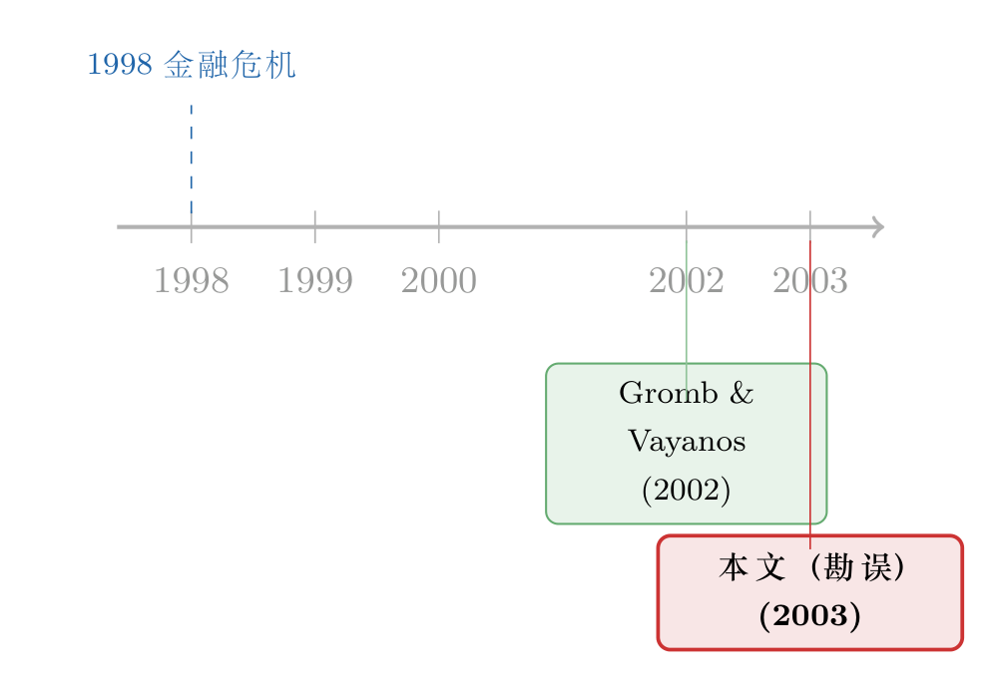

一篇 JFE 论文，只有一句话——而它纠正的，是「谁先说的」
本文读的是 Gromb & Vayanos (2003, Journal of Financial Economics) 的一篇勘误（corrigendum）：整篇文章只有一句话，把原文 2002 年那篇《Equilibrium and welfare in markets with financially constrained arbitrageurs》第 362 页开头的一句改成了——「财务受限的套利（financially constrained arbitrage）的重要性此前已被强调过，而 1998 年的金融危机让它格外清晰地凸显出来」。一句修正，改的不是错别字，而是一份学术上的归属与谦卑。
1 引言：一整页期刊，只为一句话
先做一道算术题。
Journal of Financial Economics 第 67 卷（2003 年）第 531 页，是一篇正式署名、有 DOI、被永久收录进数据库的「文章」。它的作者是两位日后会在套利与流动性领域写下一长串经典的学者——伦敦商学院的 Denis Gromb 与 MIT 的 Dimitri Vayanos。它的篇幅，是一句话。
整篇正文，只有这么一段：
在 p.362 第一段第一句话里出现了一个错误，正确的句子应当是：「While the importance of financially constrained arbitrage had been emphasized before, it was put into particularly sharp focus during the 1998 financial crisis.」
就这样。没有数据，没有回归，没有图表，没有模型。一篇顶刊论文，全部的「贡献」，是把一年前另一篇论文里的一句话，重新写了一遍。
这就让人忍不住要问一个问题：他们到底改了什么，值得动用一整页 JFE 的版面？
如果你把这篇勘误当成排版事故，那它确实无聊透顶。但如果你愿意把它和它所修正的那篇原文放在一起读，你会发现，被改动的那半句话，恰恰戳中了一个比任何系数都更难处理的东西——在学术写作里，怎么把一个想法的功劳，安放在正确的位置上。
2 被改的那半句，到底改了什么
我们手上只有「正确版本」，看不到「错误版本」的原貌。但正确版本本身已经把信息漏了出来。请注意它的句式：
While the importance of financially constrained arbitrage had been emphasized before, it was put into particularly sharp focus during the 1998 financial crisis.
这句话的重心，落在 had been emphasized before 上——「此前已经被强调过」。它先承认这个想法不是自己原创，再说 1998 年的危机让它「格外清晰地凸显」。
首先，这是一个让步状语从句（While …）。让步从句的语法功能，就是先把功劳让出去，再说自己的那一点增量。于是一个自然的推断是：被勘误掉的原句，多半在「让步」这一步上出了岔子——要么没有承认「此前已被强调」，把这个想法写得像是自己第一个提出的；要么把时间、把归属、把那场危机的角色摆错了位置。换句话说，错误的版本可能在不经意间「抢」了别人的话。
接着，一个更有意思的问题是：为什么这半句话值得专门发一篇勘误来修？因为在学术共同体里，「谁先说的」从来不是小事。一篇被反复引用的奠基性论文，它在引言里如何描述「这个想法之前有没有人讲过」，会被后来成百上千篇文献当作事实接受下来。一句措辞上的越界，时间久了就会固化成一段被误记的学术史。两位作者愿意为半句话单独发一篇勘误，本质上是在主动给自己「踩一脚刹车」——把可能被自己无意间挤占的那点功劳，还回去。
（同样是 JFE 里一篇「看似无聊」的勘误，最后却牵出一段学术史的，可参见《一个被修正的「typo」：当 JFE 的勘误，改的其实不是错别字》；而关于顶刊如何处理一桩学术优先权之争，则可参见《谁先到的？——一桩 JFE 学术优先权争议的「结案陈词」》。）
勘误（corrigendum）和更正（erratum）在期刊惯例里略有分工：erratum 通常指出版方造成的错误，corrigendum 指作者自己造成的错误。这篇是 corrigendum——是作者主动认领的、自己写下的那半句话。
3 真正关键的一步：那句话指向了 1998
要理解为什么这半句话值得改，得先知道句子里那个时间锚点有多重。
1998 financial crisis——1998 年的金融危机。对做资产定价的人来说，这五个字几乎是一个专有名词：俄罗斯主权债违约引爆全球避险，长期资本管理公司（LTCM）这家由诺奖得主坐镇、用海量杠杆做「收敛交易」的对冲基金，在几周之内濒临崩盘，最后由美联储召集华尔街出手接盘。
这件事之所以重要，是因为它给一个抽象的学术概念，提供了一具血淋淋的实物标本。在 1998 年之前，「套利」在很多模型里仍是一个近乎免费的、瞬时的、能把价格偏离立刻抹平的力量。而 1998 年所有人都亲眼看到了：套利者自己也会缺钱。当价格偏离变大、本该是「天上掉馅饼」的时候，套利者恰恰因为前期浮亏、追加保证金、资金被赎回，反而被迫平仓——他们不是在偏离扩大时冲进去，而是被偏离扩大「踢」了出来。价格于是越偏越远。
于是反转出现了：在那场危机里，套利者从「价格的纠正者」，变成了「价格的放大器」。一个本该收敛的交易，因为做这笔交易的人撑不住，反而发散了。
这正是被勘误那句话所服务的整篇论文的主题。Gromb 与 Vayanos (2002) 这篇原文的标题——《Equilibrium and welfare in markets with financially constrained arbitrageurs》（财务受限套利者市场中的均衡与福利）——把核心词放在了 financially constrained 上。勘误把句子改成「这个重要性此前已被强调过，而 1998 年危机让它格外清晰」，其实是在重新校准这篇论文与它所处时代的关系：它不是凭空发现了「套利者会缺钱」，而是给一个 1998 年已经被市场用真金白银演示过、也已被前人提及的直觉，搭起了一个干净的均衡与福利框架。
（关于「套利者自己也会怕」这件事如何反过来定价了资产，可参见《无风险的钱没人捡，是因为捡它的人也会怕》；而把 LTCM 式的固收套利「站在压路机前捡硬币」量化出来的，可参见《捡硬币的人，真的站在压路机前面吗？》。）
4 被勘误的那篇论文，到底讲了什么
既然这篇勘误本身没有任何模型，要把故事讲完整，就得绕回它所修正的那篇 2002 年的原文。下面这一节，是对 Gromb–Vayanos (2002) 框架逻辑骨架的一次概念性重述（原文的具体方程不在这篇勘误里，因此这里只讲机制与直觉，不逐字复刻原文公式）。
第一块积木：分割的市场。 设想有两个本质上提供相同（或高度相关）现金流的市场，但它们被某种摩擦隔开——两边各有自己的「本地投资者」，他们出于对冲、需求冲击等原因，把两边的价格推到了不一致的位置。一边贵、一边便宜，于是出现了一个价格偏离（price discrepancy）。
第二块积木：套利者。 有一群专门的套利者，他们是唯一能同时进入两个市场的人。理论上，他们应该在便宜的一边买、在贵的一边卖，把偏离抹平、顺便赚一笔。如果他们资金无限、约束为零，价格偏离会被瞬间消灭——这就是经典无摩擦世界里的图景。
第三块积木，也是真正关键的一步：抵押约束。 套利者不能无限加仓。他们在每个市场建立头寸，都必须拿出抵押品（collateral）/保证金来支撑；而他们能动用的财富是有限的。于是套利头寸的规模，被套利者自己的财富这个状态变量牢牢锁住。
这一步一旦加进去，整个动态就变了味道。套利者的财富不再是背景，而是定价的核心：
- 当套利者有钱时，他们能大举进场，价格偏离小；
- 当价格反向波动、套利者浮亏时，他们的抵押能力下降、被迫缩减头寸，于是偏离不但没被抹平，反而被放大；
- 而偏离放大又会进一步压低套利者持仓的市值——这是一个会自我强化的负反馈。
这正是 1998 年那场危机的模型化身：冲击 → 套利者亏损 → 抵押约束收紧 → 被迫平仓 → 价格更偏离 → 套利者更亏。套利能力，顺周期地枯竭。
这里的因果方向，和直觉刚好拧着。在无摩擦世界里，偏离越大、套利越凶；在受约束世界里，偏离常常恰恰在套利者最没钱、最使不上劲的时候最大。所谓「机会最好的时候，恰是你最接不住的时候」。
第四块积木：均衡与福利——这才是论文标题里的另一半。 很多写「套利受限」的模型到第三块就停了，讲一个放大机制就收工。Gromb–Vayanos 这篇真正的野心在 welfare 这个词上：他们要问的是，这样一个由受约束套利者撑起来的竞争性均衡，在福利上是不是有效率的？
答案是否定的，而且否定得很有讲究。套利者在做决策时，只盯着自己的私人收益——我这一单能赚多少、我的抵押够不够。但他们提供的「把两个市场的价格拉近」这件事，本身是一种对所有本地投资者都有好处的流动性服务：价格越接近,本地投资者承担的风险错配就越小。套利者并不会把这份外部收益算进自己的账本里。这就构成了一个金钱外部性（pecuniary externality）——价格是所有人共享的，但单个套利者只为自己的那一份头寸定价。
结果是：竞争性均衡是受约束次优（constrained inefficient）的。粗糙地说，相对于一个会把外部性内部化的社会计划者，分散的套利者承担的风险「太少」、在该进场的时候进得「不够」。市场不是因为套利者非理性而失效，恰恰是因为他们太理性、太只顾自己而失效。
如果一定要给这套逻辑画一张最简的骨架，它无非是在一个标准的套利者优化问题上，叠加一条把头寸钉死在自有财富上的抵押约束——正是这条约束，让「财富」从配角升级成了定价的主角，也让「外部性」有了立足之处。（这篇勘误本身不含任何方程，故此处不强行复刻原文的具体数学。）
（把「套利者」从无穷小的原子，升级成会互相博弈、会策略性地少做一点的玩家，是这条线后来的重要推进，可参见《无风险的钱，为什么没人捡？——把「套利者」从原子变成博弈玩家》，以及《明明是「稳赚」的套利，他却故意只做一半》。）
5 文献脉络：一句话背后的一条研究主线
把镜头拉远，这半句被勘误的话，其实是一条研究主线在某个时间点上的「自我定位」。
早期的资产定价世界，默认套利近乎免费：只要存在价格偏离，就会有无穷多、无穷有钱的套利者瞬间把它抹平。这套假设干净、好用，却和市场上反复出现的「明明有偏离却迟迟不收敛」对不上。
接着，一个自然的问题浮现：如果套利者自己也受约束——缺钱、被赎回、要追保证金——会怎样？这正是 1998 年的金融危机用 LTCM 给所有人上的一课。市场先于理论，把「财务受限的套利」演示了一遍。
然后，是 Gromb & Vayanos (2002) 这样的工作，把这堂「实物课」翻译成了一个可以求解、可以做福利分析的一般均衡框架：套利者作为唯一连接分割市场的中介，受抵押约束、其财富成为状态变量、并因金钱外部性而导致竞争性均衡的次优。这篇论文，正坐落在「从市场现象到均衡理论」的那个转折点上。

而 2003 年这篇勘误，则是这条主线上一个微小却诚实的注脚：作者回过头去，把原文那句对自身位置的描述，校正得更准确——「这个重要性此前已被强调过」。它承认，自己是在为一个已被前人提及、又被危机照亮的直觉，提供一副严谨的骨架，而非凭空发现了新大陆。这条主线在后来开枝散叶，长成了今天我们熟悉的「套利的极限 / 中介资产定价」整片森林。
6 评论与延伸（Q&A + 研究方向）
(a) 几个可能的疑问
Q：一篇只有一句话的勘误，凭什么值得专门写一篇博客？
因为它是一个极端干净的标本，能让我们看清两件事：其一，学术写作里「归属」与「优先权」是何等敏感，作者愿意为半句话主动认错；其二，被修正的那句话本身，恰好是整篇原文与 1998 年危机、与「套利受限」这条主线的接口。读这一句，等于读这条主线的自我定位。
Q：被勘误掉的「错误版本」原文到底长什么样？
这篇勘误没有给出错误版本，只给了正确版本。从「had been emphasized before」（此前已被强调过）这种让步句式可以合理推断：原句很可能在「这个想法之前有没有人讲过」这一点上措辞不当——或未承认前人、或把归属与时间摆错。但这只是基于句式的推断，并非勘误明文，谨慎起见不宜当作事实断言。
Q：「financially constrained arbitrage」和我们常说的「limits of arbitrage（套利的极限）」是一回事吗？
高度相关但不等同。「套利的极限」是一个大伞，泛指一切让套利无法瞬时抹平偏离的摩擦（噪声交易者风险、卖空限制、代理问题等）。「财务受限的套利」是其中很具体的一支：套利者受资金/抵押约束，其自有财富成为定价的状态变量。这篇原文的贡献，正是把这一支做成了可分析的一般均衡。
Q：模型说竞争性均衡「次优」，是因为套利者非理性吗？
恰恰相反。次优来自套利者太理性、太只顾自己：他们把两个市场价格拉近，对所有本地投资者都是好处，但这份外部收益不进他们的私人账本（金钱外部性）。所以分散决策下，他们承担的风险偏少、该进场时进得不够。失效的根源是外部性，不是非理性。
Q：这套理论对今天的政策有什么含义？
它给「为什么危机时要给中介/套利者注入流动性」提供了一个福利依据：如果套利者受约束导致的均衡本就次优，那么在他们抵押能力枯竭时施以援手，可能不是单纯救助某些机构，而是在矫正一个外部性。当然，这也立刻带来道德风险的反问——这正是后续大量文献争论的地方。
Q：为什么是「1998」而不是「2008」？
因为原文发表于 2002 年，作者能引用的最近一次大型套利崩盘就是 1998 年的俄债违约 + LTCM。事后看，2008 年金融危机几乎是同一机制的放大重演——套利者/中介缺钱、被迫去杠杆、价格发散。这也从侧面说明，这条主线抓住的，是一个会反复发作的结构性问题。
(b) 几个可能的研究问题与提案
1. 把「财务受限套利」搬进公司债市场。
【经济故事】公司债天然是个「分割 + 中介」的市场：做市商/交易商资本有限，危机时资产负债表收缩，价格偏离（同一发行人不同券、CDS-bond basis）随之放大。Gromb–Vayanos 的抵押约束机制，几乎是为它量身定做。 【可行性】高。可用
TRACE逐笔成交、配合交易商库存与资本数据，检验「套利者财富/资本」是否预测偏离的扩大与收敛。识别上可借助监管对交易商杠杆的外生冲击。难点是干净地度量「套利者财富」这一状态变量。
2. 外资持有人作为「跨市场套利者」的脆弱性。
【经济故事】在很多新兴市场，连接本地与离岸定价的，正是受资金约束的外资中介。当全球避险、外资被赎回时，他们恰恰在偏离最大时撤离——这与模型里「套利者在最该进场时最没钱」高度同构。 【可行性】中。需要细到投资者层面的跨境持仓与资金流数据（部分国家有监管申报）。识别可利用全球性的资金冲击（如美国货币政策意外）作为对外资财富的外生扰动。
3. 给「金钱外部性」的福利损失一个数字。
【经济故事】模型说均衡次优，但「次优了多少」？把这份福利损失量化出来，才能判断流动性救助到底值不值、该多大力度。 【可行性】中到低。需要结构估计：把抵押约束、套利者财富分布、本地投资者需求都校准到某个具体市场（如国债或互换）。数据可得，但结构识别强、对设定敏感，属于「能做但不轻松」。
4. 抵押约束的「顺周期」与最优监管。
【经济故事】既然抵押约束在危机时收紧、放大偏离，那么逆周期地放松保证金/资本要求，是否能改善福利？这把模型直接接到了宏观审慎政策上。 【可行性】中。理论上是模型的自然延伸；实证上可利用各国保证金/折扣率（haircut）规则的差异与改革，做事件研究。识别的关键是找到与套利者财富无关的、纯规则性的外生变动。
参考文献
- Gromb, D., & Vayanos, D. (2002). Equilibrium and welfare in markets with financially constrained arbitrageurs. Journal of Financial Economics 66, 361–.
- Gromb, D., & Vayanos, D. (2003). Corrigendum to "Equilibrium and welfare in markets with financially constrained arbitrageurs" [J. Financial Economics 66 (2002) 361]. Journal of Financial Economics 67, 531.
我的判断。 把这页 JFE 当成一篇「论文」来评，未免苛刻——它就是一句修正。但它值得被认真对待的地方，恰在于它的「小」：两位作者愿意为半句话单独立此存照，把可能被自己挤占的归属还回去，这是学术规范里一个安静而体面的动作。它修正的那句话，又正好是理解 Gromb–Vayanos (2002) 整篇贡献的钥匙——一个被 1998 年危机照亮、却并非由它独家发明的直觉，被搭成了可分析的均衡与福利框架。
至于「识别的担忧」，对这篇勘误而言其实无从谈起（它没有任何实证）。真正的担忧落在它所服务的那条主线上：「套利者财富」这个核心状态变量，在实证里极难干净地度量；而「金钱外部性导致次优」的福利结论，对模型设定相当敏感，换一组摩擦就可能改变符号。后续我最想看到的，是有人把这套抵押约束机制，认真地、带着可信外生变动地，搬到公司债与跨境持仓这两个「分割 + 受约束中介」特征最鲜明的市场里去——让一个 2002 年的理论骨架，长出 2020 年代的血肉。